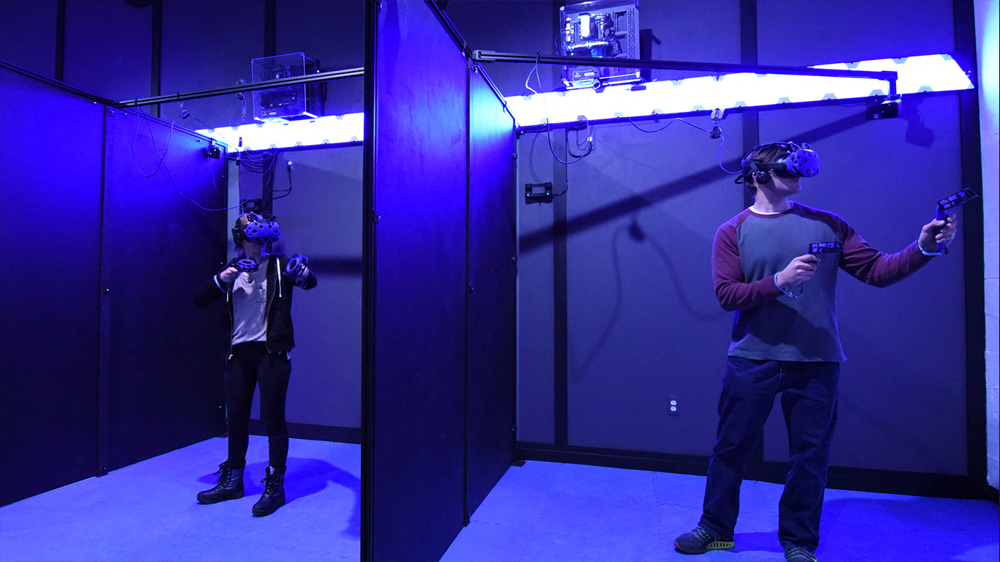
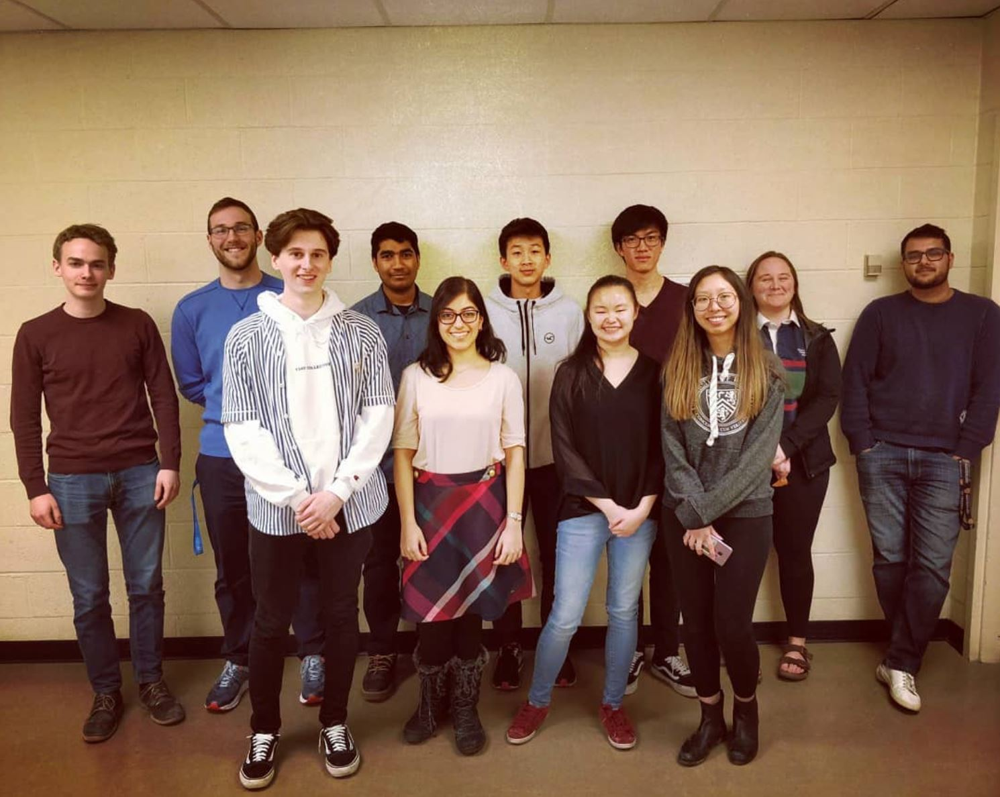

-
WatLock wins award at Project Airlock Challenge design phase!
On the weekend of May 18th, 2019, various universities came together to present their airlock design at UBC’s Mars Colony Project Airlock Challenge. WatLock proudly won the best presentation award after months of hard work! Special thanks to Adam, Yifei, Johnny, Alyssa, and Logan who made sure that the presentation was flawless hours before the competition. What’s next? Building a prototype for our airlock design to compete in May 2020!
-
WatLock goes to the VR Arcade!
For our second team social of the winter 2019 term, the team went to CTRL V, Canada's first virtual reality arcade!
 -
WatLock plays board games!
The cold did not stop us from having a good time as the team stayed indoors playing some fun board games and went for some warm dinner!
 -
WatLock goes bowling!
Every successful team needs some time off. For our fall 2018 team social, the team went to Victoria Bowling Lanes and had a blast!
-
Professor Ting Tsui becomes Team Advisor
Of course such a large task needed backing from more experienced hands... Professor Ting Tsui decided to give this effort a chance when he joined the WatLock team. Learn more about Professor Tsui and his contributions to the world of science!
-
WatLock is established!
After a discussion amongst two old friends about what they wish to accomplish during their time in university, the duo decide to embark on the challenge set forth by the University of British Columbia and decide to form WatLock.